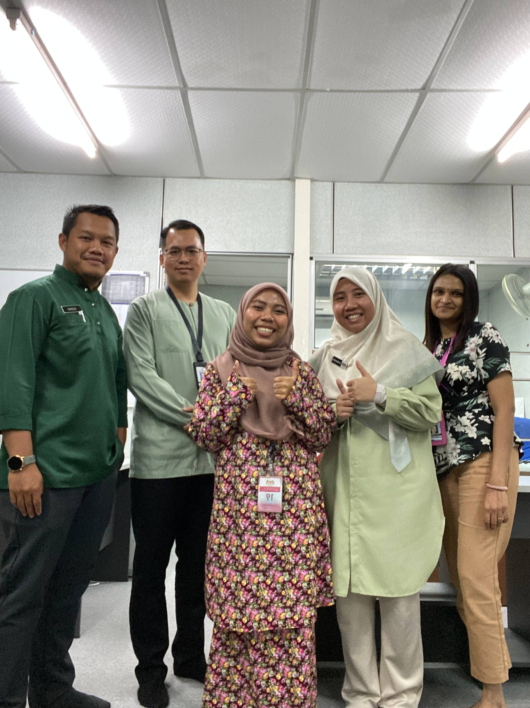
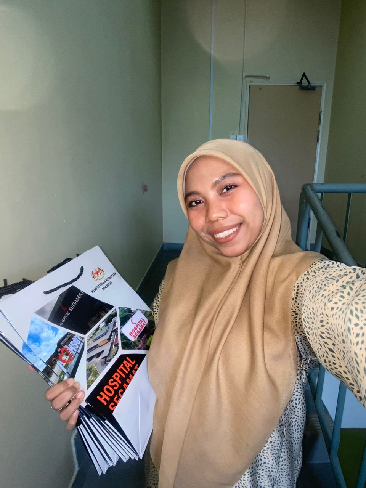
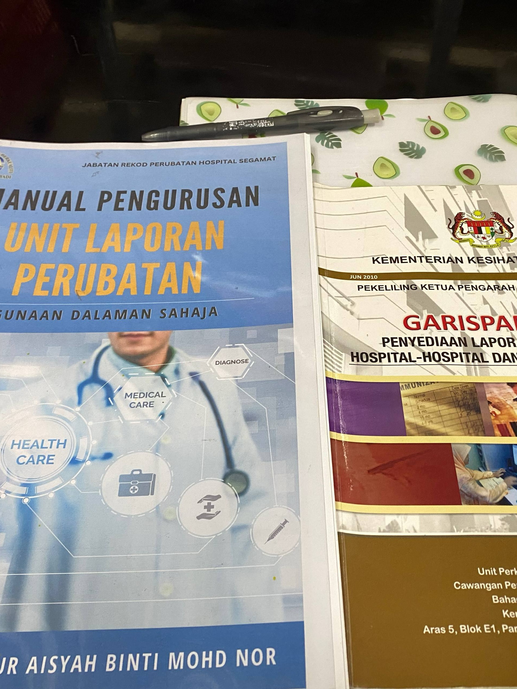
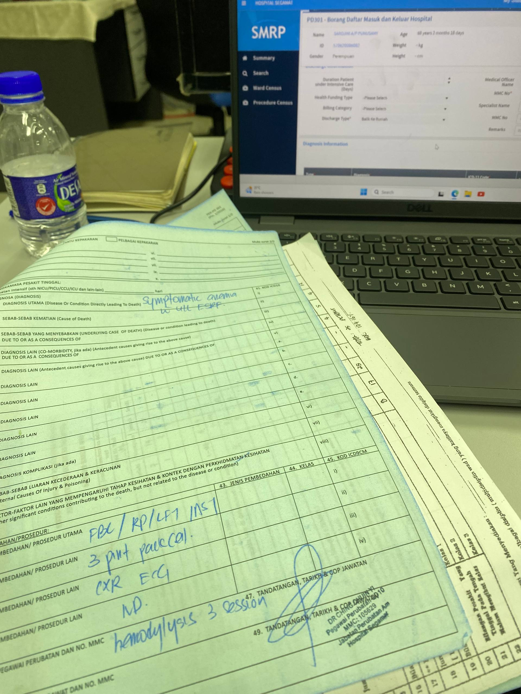
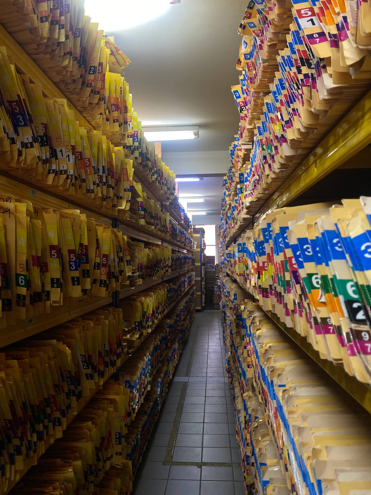

Hospital Segamat Internship
Clinical Support Intern – Quality Unit / Medical Records
Hospital Segamat, Johor | 27 July 2025 – 19 September 2025 | 2-month internship- Rotated across sub-units: Medical Reports, Statistics, and Medical Records
- Assisted in quality audits and workflow improvement
- Handled patient documents (BHT), ensuring proper storage and tracking
- Participated in statistical documentation and data handling
- Learned hospital quality standards and workflow across departments
Gallery

Daily tasks in Quality Unit

Team at Quality Unit

My daily routine

Medical Reports Unit

Statistics Unit

Medical Records Storage